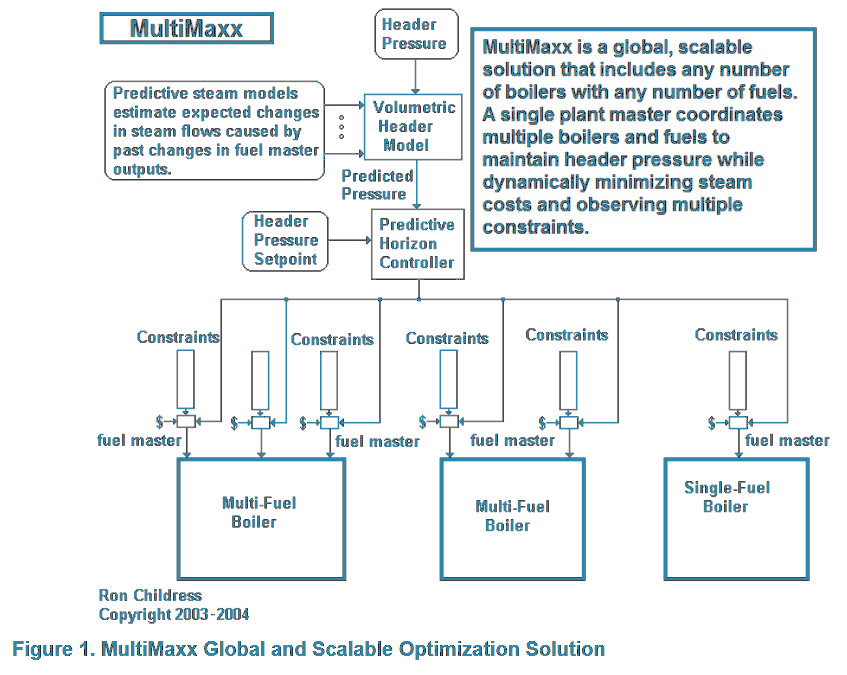
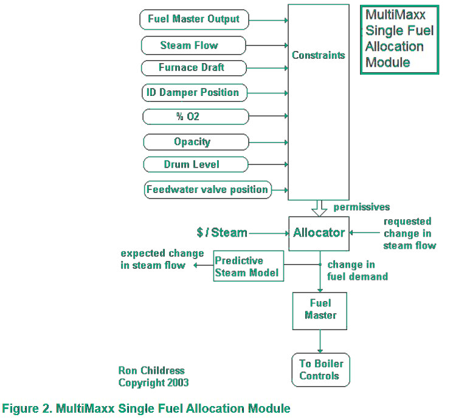
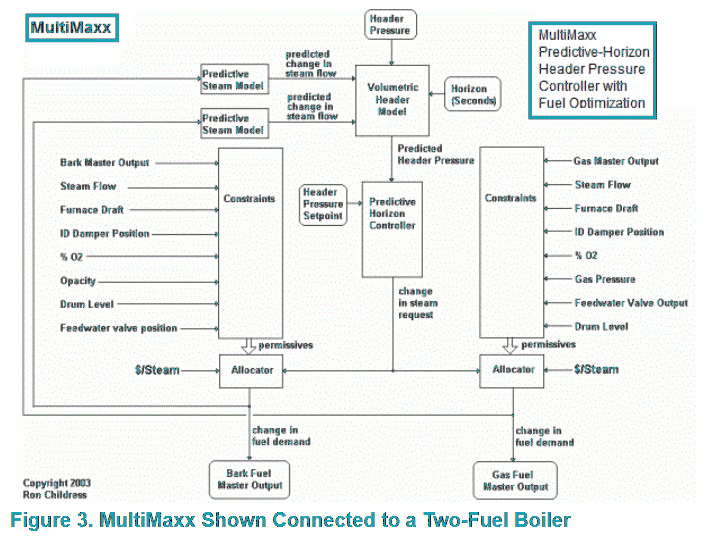

Maintaining header pressure across multiple boilers and multiple fuels — observing hundreds of simultaneous constraints, every second, across every shift — is beyond any human operator's sustained capacity. MultiMaxx does it without effort, without fatigue, and without the judgment lapses that even the best operators eventually experience. The result is tighter pressure control at substantially lower fuel cost.
Request a Free Evaluation → All ServicesConventional boiler control reacts to instantaneous header pressure, which means it is always responding to something that has already happened. MultiMaxx predicts where pressure will be several minutes into the future, and adjusts boiler loads now to maintain a predicted setpoint. The analogy is exact: the difference between driving by looking just over the hood versus looking down the road.
MultiMaxx adjusts boiler loads to maintain a predicted header pressure several minutes into the future — preventing over-response to process upsets caused by boiler response lags. This eliminates the thermal stress, fuel waste, and pressure excursions that characterize conventional reactive control strategies. The bigger the header volume, the better MultiMaxx performs.
Consider a facility using bark (free but slow. 10-minute response) and fossil fuel (expensive but fast. 2-minute response). MultiMaxx manages this trade-off continuously: deploying fossil fuel precisely while waiting for bark steam to respond, then returning fossil fuel to minimum as bark production comes online. The economy-versus-performance balance is set by the facility owner, not the operator on duty.
MultiMaxx determines each boiler's dead-time and first-order response characteristics through on-line bump tests and uses those characteristics to predict future steam production from past fuel master changes. It simultaneously uses header volume as a steam flow balance indicator, eliminating the need for multiple steam flow measurements required by conventional feed-forward approaches.
Every constraint is monitored continuously — minimum and maximum steaming limits, furnace draft, drum level stability, fuel pressure and flow, damper positions, O2 percentage, opacity, and particulate emissions. As any constraint is approached, fuel master adjustments are proportionally reduced to prevent violations. When one boiler is constrained, remaining boilers automatically absorb more load — unlocking steam capacity that facilities had assumed was unavailable.
MultiMaxx is deployed as modular algorithms residing directly in the regulatory control platform — as an integral part of each boiler's combustion controls. This provides extreme reliability. In the event of a supervisory system failure, individual boilers gracefully fall back to independent control without disruption to operations.
MultiMaxx supports a unique messaging system that informs operators in plain English exactly what constraints are active and why the system cannot improve further. A typical message: "Boiler 5 cannot increase hog steaming because the ID Fan is maximized." Special daily reports consolidate constraint frequency data — prioritizing equipment improvements by their dollar impact on achievable savings.
Most power houses artificially limit boilers to a maximum steaming rate set well below the real physical limit. By observing every actual constraint continuously — furnace draft, superheater velocity, feedwater flow — MultiMaxx pushes boilers to their real limits instead of artificial ones. Eliminating this "comfort zone" translates directly into substantial savings that existed all along, invisible because no previous system could safely approach the real boundaries.
MultiMaxx operates at two levels simultaneously: a global optimizer allocating steam load across all boilers to maintain a single header pressure setpoint, and individual fuel allocator modules inside each boiler's regulatory controls observing every local constraint every second.

Each fuel connected to each boiler gets its own allocator module. It accepts a steam demand request from the global optimizer, determines the allocation based on fuel cost and boiler efficiency, and smoothly reduces output as any constraint boundary is approached — proportionally, never abruptly.

Individual allocator modules combine inside a single boiler controller. MultiMaxx continuously decides how much steam demand each fuel satisfies — deploying fast-response fossil fuel while bark ramps up, then returning fossil to minimum once bark steam comes online.

The difference between looking over the hood and looking down the road — illustrated across a real boiler pressure excursion.
HEADER PRESSURE RESPONSE — REACTIVE vs. MULTIMAXX PREDICTIVE-HORIZON CONTROL
Available for installation in all modern distributed control and PLC systems or as a PC-based application interfacing to most control systems via industry standard communication protocols.
Our engineering team will assess your facility's specific dynamics and identify exactly what MultiMaxx can deliver — in documented financial terms, specific to your processes. No obligation. No sales pitch. Just numbers.